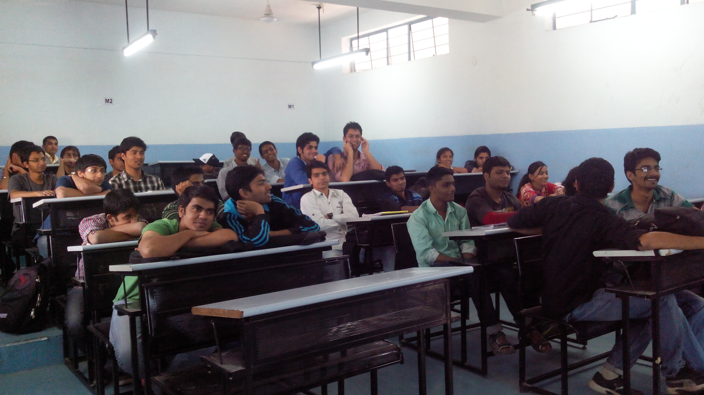

Introduction to Embedded Linux on BeagleBone Black
Having succssfully completed conducting a month long workshop at NSIT, New Delhi.
Prof. SR Dhore, HoD Computer Engineering of AIT Pune asked me to conduct a similar presentation for my batchmates.
He asked me to keep the talk short, and show certain practical demonstrations inorder to keep the students motivated throughout. Hence I decided to talk about my favourite, The BeagleBone Black
I started of with a little bit about the history of Embedded Computing and how 8086 became the 8051, and then how firms like ATmel and TI developed their own controllers. I then talked about the ARM, and how powerful it was. In order to keep my audience engaged I quickly then moved on to the BeagleBone Black and compared it to the popular Arduino.

During this time I also passed my own Beaglebone around for the audience to admire. Having talked alot, I then decided to show the BeagleBone in action. I started out with the standard 'Hello LED', and as I wanted to keep things simple I used the Adafruit Library during my entire presentation.
Next, I talked about PWM, and how it is used to fool the observer in believing he's ooking at an Analog Signal though, it is purely digital. I quickly substantiated this theory by showing how to vary intensity of an LED using PWM.
I took my talk further by moving on to Servo Motors, and how PWM can be used to control servos, I could see how fascinated my audience was when I made the servo move at a specific angle using a simple Python script.

I had got a webcam along and so before ending my talk I decided to push my beaglebone a little harder and connect USB Webcam to it and stream video from the BeagleBone over to my Laptop. This was the most fun part! and really got my batchmates intrigued by the capabilites of the BeagleBone!
I was met with applause, man! isn't it the best when your own classmates appreciate you! I have uploaded the slides from my presentation on slideshare, check it out!